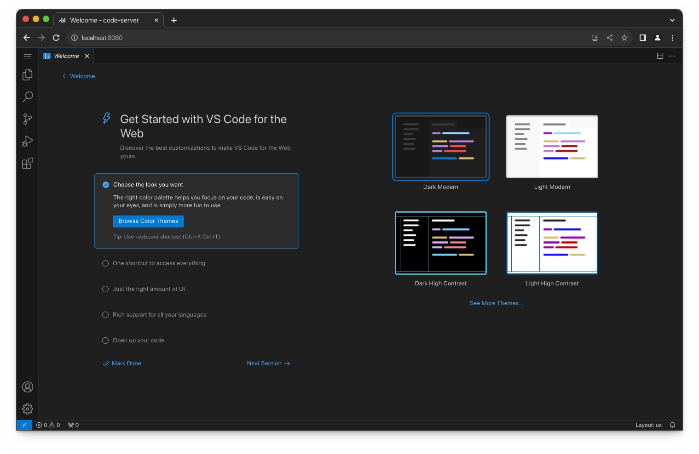
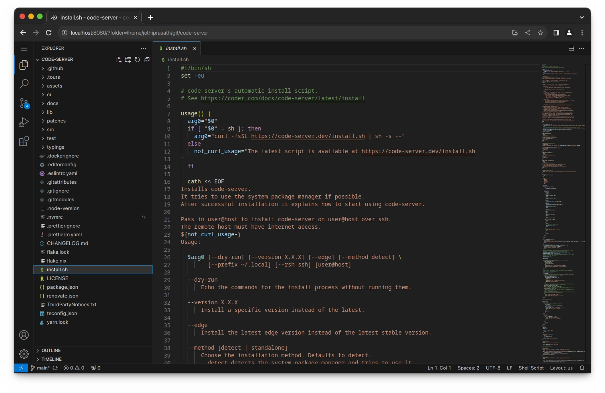

Code-server
 项目首页
项目首页
Code-server是一个基于Visual Studio Code（VS Code）开发的在线编辑器，它允许用户在浏览器中编写代码，无需安装本地开发环境。


 如何部署在线 Code-server
如何部署在线 Code-server
什么是 Code-server
- Code-server由Coder公司开发，旨在为开发者提供一个便捷统一的开发环境，使得开发者可以从任意设备、任意位置通过浏览器进行代码编写，从而免去了常规的IDE开发流程中的环境搭建问题
功能列表
- 在线编辑器： Code-server将VS Code的功能搬到了浏览器上，用户可以在任何设备上通过浏览器访问和使用VS Code的所有功能，包括代码编辑、调试、版本控制等
- 远程开发：支持远程开发和协作，适合需要远程工作或希望在不同设备间无缝切换的开发者。它提供了一个统一的开发环境，使得开发者可以在任何地方进行代码编写和调试
- 安全性：Code-server提供了用户登录功能，确保只有授权用户可以访问和使用VS Code内核代码，保障了开发环境的安全性